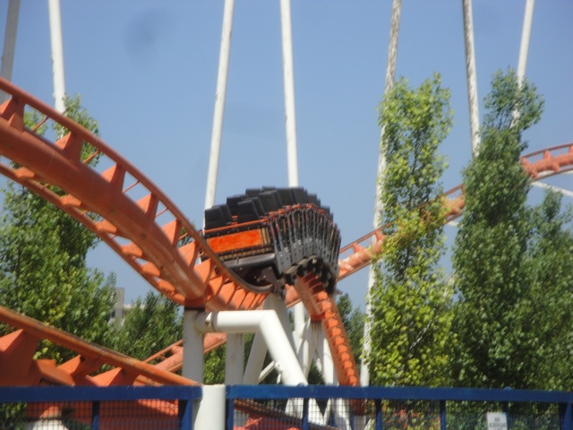
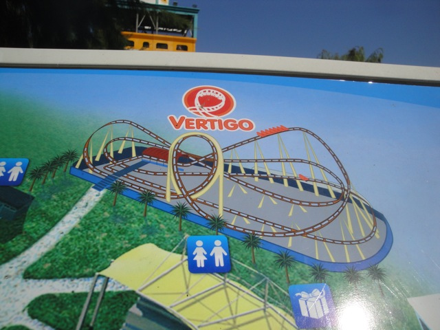

| |
Vertigo Review
We're here at Zoomarine. Today's ride we'll be reviewing for you is Vertigo, the main roller coaster of the park. After getting in the trains and pulling down the lap bars, we're off!! We then climb up the lifthill. When we look to our right, we then see the loop and get excited as we get to go upsidedown without OTSRs today. Once we crest the top of the lifthill, we then go through a small turn before falling into the twisted drop. The drop is fun as we are leaning to the right, but we're still gaining quite a bit of speed for a ride of this size. After the drop, we roar straight up into a loop. The loop is pretty powerful and manages to bring a smile to our face. After roaring through that loop, we head around a nice curve up before heading down a small drop. The drop is fun. Wee. We then rise up a little before heading around another curve. There's not much laterals here, but this is still pretty fun. We head down a small dip before rising up again and going through another banked curve. After that, we head up a small bump before dropping down to the ground. It's not a steep drop, but it's also completely banked. Granted, it's a tiny drop. But still. I liked it. We then slam into a banked turn before whipping around and ending up straight into the brake run. And that's the ride. It's a fun coaster. Nothing amazing or special. But screw it! I really like it!! It's a Schwarzkoph Looping Star! What's not to like?
7/10
Location: Zoomarine
Opened at Freizeitpark Kirchhorst in 1979
Moved to Southport Pleasureland in 1985
Moved to OK Corral in 1988
Moved to Parque de Atracciones de Madrid in 1992
Moved to Plutón Park in 2000
Moved to Luneur Park in 2002
Moved to Zoomarine in 2010
Built by: Schwarzkopf
Last Ridden: June 17, 2012
I have ridden this exact same ride at the following parks.
Frontier City
Nagashima Spaland
Vertigo Photos



Home
|